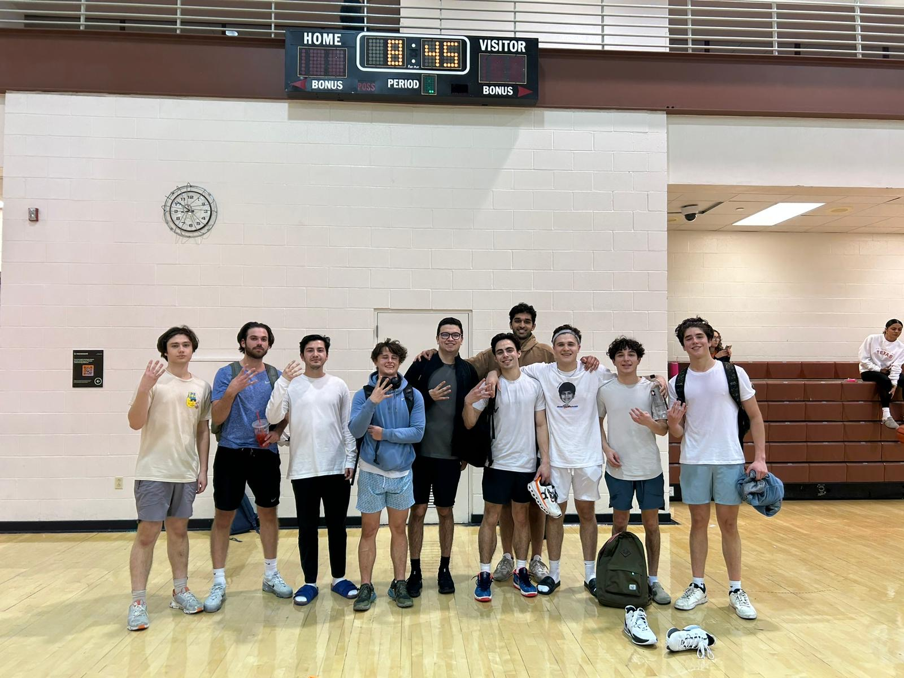
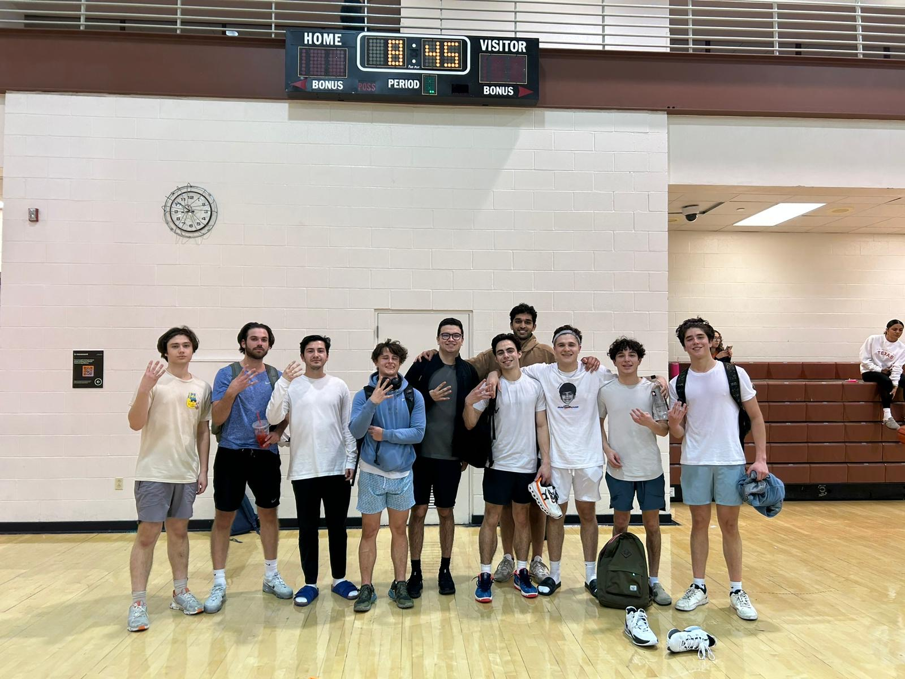

Hello, my name is Kiko

Software Engineer & Developer
I am a recent graduate from the Cockrell School of Engineering at UT Austin. My passions and career interests lie in back-end software development, mobile computing, artificial intelligence/machine learning, and entrepreneurship; my technical background stems from various independent and group-based engineering projects within Cockrell, ranging from poem-generating software algorithms to virtual pantry management mobile applications. Down the road, I hope to find a position where I may fulfill both my engineering and business interests while making a meaningful impact in the field of technology.
In addition to studying at the University of Texas, I have ventured out by taking engineering and business related courses at the University of California, Los Angeles, as well as in Barcelona, Greece, and Paris. I am extremely passionate about technology and innovation, while being considered a hard-working, determined individual who will go above and beyond to find any solution.
Currently, I am seeking a new-grad/junior software engineering position.

Undergraduate Education
The University of Texas at Austin
Major: Electrical and Computer Engineering
Minor: Business
Specialization: Software Engineering and Design
Skills
- Backend Programming (Python, Java, C/C++, JavaScript, TypeScript)
- Frontend Development (HTML/CSS, React Native)
- Machine Learning Modeling
- Software Developer Tools (Git, Google Cloud Platform, Jira, Linux, MobaXTerm, MongoDB Compass, Android Studio, VS Code)
- Communication & Collaboration


 
